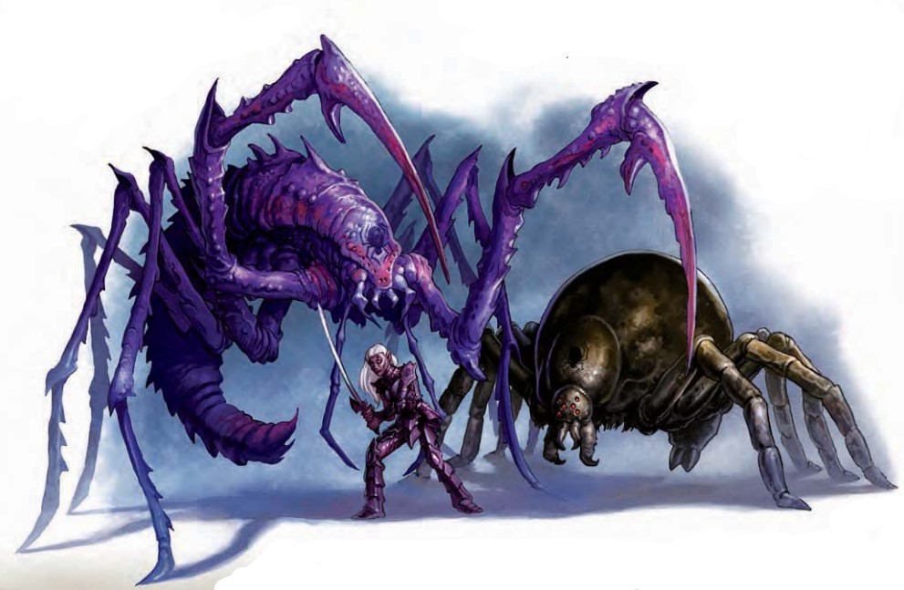

这个优雅的类人生物有着墨色的皮肤和白色的头发。她看起来比同类要强壮，而她那朦胧的盔甲上有一个蜘蛛徽章。
罗丝宠儿生物是受到黑暗精灵蜘蛛女神罗丝特殊祝福的生物。这些生物比普通同类更强壮、更坚韧、更擅长潜行。
罗丝宠儿狩魔蛛（Lolth-Touched Bebilith）一个巨大而扭曲的蜘蛛状恶魔矗立在你面前，其头部隐约浮现着一只蜘蛛的纹章。
| 资料栏位 | 罗丝宠儿狩魔蛛 始终混乱邪恶，超大型异界生物（混乱，邪恶，跨位面） |
|---|---|
| 先攻 | +5；感官：黑暗视觉60英尺，灵敏嗅觉；聆听+16，侦查+16 |
| 语言 | 理解深渊语，100英尺心灵感应 |
| 防御等级 | 22，接触9，措手不及21（-2体型，+1敏捷，+13天生） |
| 生命骰 | 186（12HD）；DR10/善良 |
| 免疫 | 恐惧 |
| 豁免 | 强韧+19，反射+9，意志+9 |
| 速度 | 40英尺，攀爬速度20英尺 |
| 近战 | 啮咬 +22（2d6+12 外加毒素）和 2爪击 +17（2d4+6） |
| 远程 | 蛛网 +11 接触（纠缠） |
| 占据/触及 | 15英尺；触及：10英尺 |
| 基本攻击/擒抱 | +12；擒抱：+36 |
| 攻击选项 | 阵营打击（混乱，邪恶），毒素（DC 27，1d6体质/2d6体质），撕裂盔甲 |
| 特殊动作 | 异界传送（仅限自己） |
| 属性 | 力量34，敏捷12，体质32，智力11，感知13，魅力13 |
| 专长 | 顺劈斩、精通先攻、精通擒抱、猛力攻击、追踪 |
| 技能 | 攀爬+35，交涉+3，潜行+20，跳跃+31，聆听+16，潜行+20，侦查+16，察言观色+16，生存+1（追踪时+3） |
| 进化 | 13-18HD（超大型）；19-36HD（巨型） |
蛛网（Ex）：罗丝宠儿狩魔蛛每日最多可投掷4次蛛网。效果类似于捕网攻击，但最大射程为30英尺，射程单位为10英尺，可对最多达到巨型的目标有效。被缠绕的目标无法移动。被缠绕的生物可以尝试DC 27的脱逃或力量检定以挣脱或破坏蛛网（检定DC基于体质）。蛛网拥有14点生命值，硬度为0，75%的几率不被火焰点燃。
撕裂盔甲（Ex）：若狩魔蛛的两次爪击均命中，它会撕裂目标的盔甲，自动对盔甲造成4d6+24点伤害。盔甲生命值降至0时，盔甲被摧毁。
异界传送（Su）：类似于异界传送；随意使用；施法等级12。
技能加值：其深色斑驳的皮肤提供+12的躲藏加值。在潜行上获得+4种族加值。其种族能力为攀爬提供+8加值，并可在受威胁或匆忙时选择自动10。
罗丝宠儿狩魔蛛通常被赋予特殊任务。这些蜘蛛恶魔常被派去猎杀并摧毁异变的蛛化精灵（Driders）。无人能说清这是否是对那些"失败"卓尔的进一步考验，还是单纯的仇恨表现。
战斗策略罗丝宠儿狩魔蛛是一种狡猾的掠食者，拥有极佳的身体素质，使其蛛网难以挣脱且毒素更加致命。它的强韧与无畏使其在战斗中更加大胆，极少会从战斗中撤退。它通常在战斗开始时以猛力攻击施展重击，若发现目标难以击中，则稍微减少攻击力度。它的高机动性和撕裂护甲能力使其能够迅速削弱重甲敌人，同时利用其毒素来削弱目标的体质，使敌人迅速失去战斗力。
罗丝宠儿变种蜘蛛（Lolth-Touched Monstrous Spider）一个巨大的昏暗蜘蛛出现在前方，它肿胀的身体上带有微弱的纹章，强壮的腿将身体高高撑起，随即猛然扑向目标。
| 资料栏位 | 罗丝宠儿变种猎蛛 始终混乱邪恶，大型虫类 |
|---|---|
| 先攻 | +3；感官：黑暗视觉60英尺，震颤感知60英尺；聆听+0，侦查+8 |
| 语言 | 无 |
| 防御等级 | 14，接触12，措手不及11（-1体型，+3敏捷，+2天生） |
| 生命骰 | 34（4HD） |
| 免疫 | 虫类免疫 |
| 豁免 | 强韧+8，反射+4，意志+1 |
| 速度 | 30英尺，攀爬速度20英尺 |
| 近战 | 啮咬+7（1d8+7外加毒素） |
| 远程 | 蛛网+5接触（纠缠） |
| 攻击选项 | 毒素（DC 16，1d6力量/1d6力量） |
| 属性 | 力量21，敏捷17，体质18，智力―，感知10，魅力2 |
| 技能 | 攀爬+13，躲藏+7，跳跃+15，聆听+0，潜行+7，侦查+8 |
| 进化 | 5-7HD（大型） |
蛛网（Ex）：罗丝宠儿变种蜘蛛每日可以投掷8次蛛网，效果类似于捕网攻击。最大射程100英尺，射程单位为20英尺，对目标体型最多比蜘蛛大一级的生物有效。被纠缠的生物无法移动，需通过DC 21的脱逃检定或力量检定挣脱（DC基于力量，包含+4种族加值）。蛛网有12点生命值，硬度为0，且受到火焰攻击时伤害加倍。
技能：在跳跃上获得+10种族加值，在攀爬、躲藏、侦查上获得+8种族加值，在潜行上获得+4种族加值，并且可以在攀爬检定中始终选择取10，即使在受威胁或匆忙情况下。
罗丝宠儿变种蜘蛛是被提升为罗丝神庙哨兵的猎蛛。这种蜘蛛行为模式类似于普通变种蜘蛛，但因其神赐之力，它对更大、更强的猎物毫无畏惧。
战斗策略罗丝宠儿巨型猎蛛通过蛛网捕捉猎物后发起近战攻击，利用其高强度的毒素削弱目标。它通常在隐蔽中等待机会出击，并敢于挑战超越其体型和力量的对手，充分展现其作为神灵使者的凶猛与无畏。
创造罗丝宠儿生物注：略，已有翻译。
范例遭遇罗丝宠儿生物通常作为小队领导者或支持角色，带领或协助它们较弱的同类。它们可能陪伴罗丝的女祭司、守护神庙，或在卓尔军队中作为增强型坐骑或战兽。有时，罗丝直接祝福某个卓尔仆从，使其成为罗丝宠儿。
单独个体（EL 1-12）：单个罗丝宠儿生物通常是精英守卫或特工。
EL 3：一只罗丝宠儿的大型变种蜘蛛潜伏在罗丝次级神庙的蜘蛛雕刻中。其卓越的隐匿技能使其很难与周围环境区分开来，通常等待猎物靠近后发起攻击。一位卓尔饲虫师对其进行了训练，使其不会攻击佩戴罗丝圣徽的人。
EL 11：一只罗丝宠儿狩魔蛛巡游地下裂谷的墙壁，猎杀居住在悬崖洞穴中的卓尔蜘蛛变种。有时，它会将一个包裹在蛛网中的牺牲品带回深渊，要么为自己的享用，要么执行蜘蛛神后的命令。
巡逻队（EL 3-15）：罗丝宠儿的生物通常在卓尔中晋升为精英小队的指挥官，负责巡逻卓尔城市附近的地下区域。
EL 9：一名罗丝宠儿的游侠因扎迪拉被派去猎杀掠夺卓尔家园的半蛛人领导者半蛛神眷。尽管她通常独自监视半蛛人的活动，但在采取果断行动时，她会带领一支由4名4级卓尔游侠组成的突袭小队。
生态罗丝宠儿生物与卓尔及其盟友共存。它们有时直接为罗丝服务于蛛网深渊，或被蜘蛛女王派遣执行特定任务。
环境罗丝宠儿生物通常出现在地下，即使其基体生物的原始栖息地不在此地。大多数此类生物本就是地下的原生物种。直接为蜘蛛女王服务的罗丝宠儿生物栖息在深渊第66层蛛网深渊。
典型身体特征罗丝宠儿生物比普通的同类更强壮、更健壮。如果是双足生物，其身形会显得更高大，肤色也比自然状态更深沉。这种深色有助于它们更容易融入阴影中。有时，它们的身体上会出现淡淡的蜘蛛纹章，以显示其受宠的地位。
阵营罗丝宠儿生物的阵营会转变为混乱邪恶，与蜘蛛女神的阵营一致。
典型财宝如果基体生物通常拥有财宝，那么罗丝宠儿生物也会根据其挑战等级获得相应的财宝。罗丝宠儿生物偏好与普通同类相似类型的物品。
罗丝宠儿生物在艾伯伦在艾伯伦的主流万神殿中并没有罗丝的存在，她也未被任何次要教派所崇拜。艾伯伦的大多数卓尔崇敬愤恨，这位阴险的激情之神在许多方面填补了罗丝的角色。罗丝宠儿模板可以直接用于艾伯伦的战役中，只需将其称为"愤恨宠儿"生物即可。而希恩德瑞克的卓尔则崇拜蝎神乌库尔，这位神灵可能以类似的方式赐福他的追随者。此外，黄泉巨龙教团众多且多样化，他们的崇拜对象可能是古老的恶魔或已被文明遗忘的灵体。因此，在艾伯伦的战役中引入罗丝只需简单地创建一个崇拜蜘蛛恶魔的教派即可。罗丝甚至可以被设定为邪兽鬼王侯，一位强大的邪恶领主，被困于凯博尔深处。
罗丝宠儿生物在费伦卓尔审判者是令人恐惧的骑士，他们效忠于席文塔姆――罗丝的冠军。这种服侍赋予他们许多可怕的力量，使他们能够召唤蜘蛛状的怪物作为仆从。这些恐怖的战士常常被罗丝赐予眷顾，使他们在战斗中更加危险，并在变为蜘蛛形态时增强其毒性。某些特别受眷顾的审判者甚至可能拥有一名罗丝宠儿仆从。在卓尔大都会魔索布莱城，罗丝宠儿的守卫负责保护布瑞契高阶训练学院。当高阶贵族们冒险离开其庄园内相对安全的区域时，罗丝宠儿护卫也会随行护卫他们。
罗丝宠儿生物知识拥有宗教知识（Knowledge (Religion)）技能的角色可以对罗丝宠儿生物有更多了解。当角色成功进行技能检定时，可以解锁以下信息，包括较低难度等级的信息。需要根据基体生物的类型，使用适当的技能来识别其特征。
| 知识（宗教） | 结果 |
|---|---|
| DC 15 | 这是一个罗丝宠儿生物，一种更为强大的个体。罗丝是卓尔的蜘蛛女神，也是魔网深坑的女王。 |
| DC 15+CR | 罗丝宠儿生物可以是几乎任何类型的生物，其力量和体质得到了大幅度增强，并且完全无所畏惧。 |
| 资料栏位 | (女性)罗丝宠儿卓尔巡林客 |
|---|---|
| 种族 | (女性)罗丝宠儿卓尔 |
| 职业等级 | 巡林客 5 |
| 生命骰 | 5d8+20（46HP） |
| 先攻 | +2 |
| 速度 | 30尺（6格） |
| 防御等级 | 16（+2敏捷，+4盔甲），接触12，措手不及14 |
| 基本攻击/擒抱 | +5/+11 |
| 攻击 | 近战 +1弯刀+13（1d6+7/18-20）或远程 精制品手弩+8（1d4/19-20外加毒素） |
| 全力攻击 | 近战 +1弯刀+11（1d6+7/18-20）和精制品短剑+10（1d6+3/19-20）或+1弯刀+13（1d6+7/18-20）远程 精制品手弩+8（1d4/19-20外加毒素） |
| 特殊攻击 | 宿敌异怪＋4，宿敌人类＋2，毒剂（卓尔毒，DC13，昏迷1分钟/昏迷2d4小时），类法术能力，施法能力（巡林客5） |
| 特殊能力 | 黑暗视觉120尺，免疫恐惧和睡眠，SR 16，强光暂盲，自动搜索密门或隐蔽门，动物伙伴，与动物伙伴链接，法术共享，野性认同＋6（魔法兽＋2） |
| 豁免 | 强韧+8，反射+6，意志+2（+4对附魔）对抗妖精的法术和类法术能力时+4 |
| 属性 | 力量22，敏捷15，体质18，智力10，感知12，魅力12 |
| 技能 | 躲藏+14，知识（地下城）+6，知识（自然）+4，知识（宗教）+1，聆听+10，潜行+19，搜索+2，侦察+11，生存+9（地下+11） |
| 专长 | 闪避，坚忍B，追踪B，双武器攻击B，武器专攻（弯刀） |
| 挑战等级 | 7 |
| 财产 | 战斗装备加+1蹑行镶嵌皮甲，+1弯刀，精制品短剑，精制品手弩带20枝矢 |
| 阵营 | 混乱邪恶 |
| 进化 | 依职业等级而定 |
| 等级调整 | +3 |
罗丝宠儿卓尔巡林客是侦察地下世界洞穴和通道的残忍猎人，她屠杀自己能解决的敌人，带领她的突击队对抗其他敌人。这里的罗丝宠儿卓尔巡林客在种族调整和生命骰属性增强之前的属性值为：力量15，敏捷13，体质14，智力8，感知12，魅力10。
罗丝宠儿卓尔巡林客使用通用语，精灵语和地底通用语。
战斗罗丝宠儿卓尔巡林客专攻于突袭。她喜欢不被发现地追踪猎物直到时机成熟，然后尽可能地突袭。在进入战斗之前，她喝下树皮术药水并对自己施展阔步术。她的蝰蛇动物伙伴用它的毒牙消弱对手并帮助她夹击。
强光暂盲（EX）：当突然暴露在强光下（例如日光或昼明术）下时，卓尔会目盲一轮，随后在强光下的每一轮中她都将在所有的攻击，豁免和检定上受-1惩罚。
已准备巡林客法术（CL 2）：1级――阔步术
类法术能力（CL 5）：1次/日――舞光术，黑暗术，妖火术
战斗装备：3剂卓尔毒，2治疗中度伤药水，树皮术药水（＋3）
动物伙伴：中型蝰蛇（怪物图鉴280）
技能：罗丝宠儿卓尔巡林客在潜行和躲藏上有+4种族加值。
罗丝宠儿是一个能被加到任何非善良非守序的实体活体生物（以下简称为基本生物）上的后天模板。
挑战级数：基本生物＋1。
阵营：该生物的阵营变为混乱邪恶。
属性：基本生物属性 力量＋6，体质＋6
技能：罗丝宠儿生物在潜行和躲藏上有+4种族加值。
特性：罗丝宠儿生物拥有所有基本生物的特性和以下特性。
无畏（EX）：罗丝宠儿生物免疫于所有恐惧效果。
等级调整：基本生物＋1。